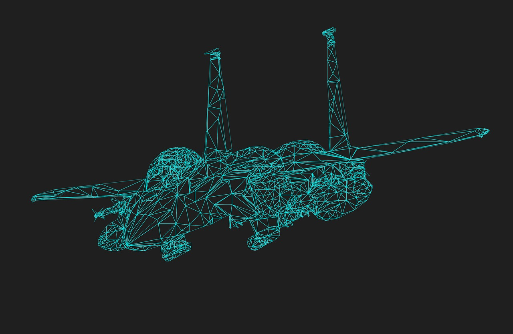

AI won't destroy us because it became self aware, it will destroy us because thats what our enemies programmed it to do.

The 2017 Worldwide Threat Assessment of the US Intelligence Community listed our number 2 threat as "Emerging and Disruptive Technologies". The Number 1 emerging technology threat listed is Artifical Intelligence.
- Cyber Threat
- Emerging and Disruptive Technologies
- Artifical Intellegence
- Genome Editing
- Internet of Things
- Next-Generation Semiconductors
- Terrorism
- Weapons of Mass Destruction and Proliferation
- Space and Counterspace
- Counterintelligence
- Transnational Organized Crime
- Economics and Natural Resources
- Human Security
Some of the most Advanced AI's you should be aware of:
- Technological singularity
- The technological singularity (also, simply, the singularity) is the hypothesis that the invention of artificial superintelligence will abruptly trigger runaway technological growth, resulting in unfathomable changes to human civilization.
- Artificial Neural Network
- Artificial neural networks (ANNs) or connectionist systems are computing systems inspired by the biological neural networks that constitute animal brains. Such systems learn (progressively improve performance) to do tasks by considering examples, generally without task-specific programming.
- Affective computing
- Affective computing (sometimes called artificial emotional intelligence, or emotion AI) is the study and development of systems and devices that can recognize, interpret, process, and simulate human affects.
- Artificial general intelligence
- Artificial general intelligence (AGI) is the intelligence of a machine that could successfully perform any intellectual task that a human being can.
Our enemies are funneling massive amounts of money into artifical intellegence because they know that's the easiest place to militarily surpass us. You don't need tons of materials to code computers, just time and intellegence.
